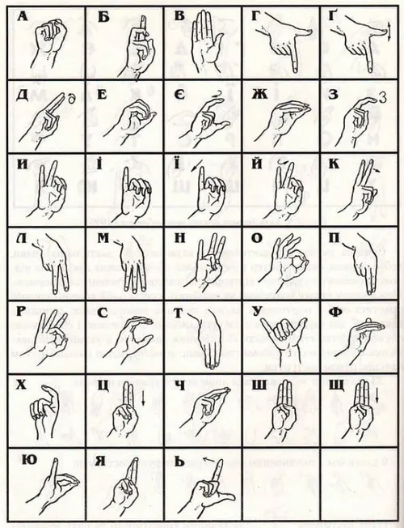

Hand sign
Sign languages (also known as signed languages) are languages that use the visual-manual modality to convey meaning, instead of spoken words. Sign languages are expressed through manual articulation in combination with non-manual markers. Sign languages are full-fledged natural languages with their own grammar and lexicon.
[1] Sign languages are not universal and are usually not mutually intelligible,
[2] although there are also similarities among different sign languages.Linguists consider both spoken and signed communication to be types of natural language, meaning that both emerged through an abstract, protracted aging process and evolved over time without meticulous planning.
[3] This is supported by the fact that there is substantial overlap between the neural substrates of sign and spoken language processing, despite the obvious differences in modality.
[4] Sign language should not be confused with body language, a type of nonverbal communication.Wherever communities of deaf people exist, sign languages have developed as useful means of communication and form the core of local deaf cultures. Although signing is used primarily by the deaf and hard of hearing, it is also used by hearing individuals, such as those unable to physically speak, those who have trouble with oral language due to a disability or condition (augmentative and alternative communication), and those with deaf family members including children of deaf adults.The number of sign languages worldwide is not precisely known. Each country generally has its own native sign language; some have more than one. The 2021 edition of Ethnologue lists 150 sign languages,
[5] while the SIGN-HUB Atlas of Sign Language Structures lists over 200 and notes that there are more which have not been documented or discovered yet.
[6] As of 2021, Indo-Pakistani Sign Language is the most used sign language in the world, and Ethnologue ranks it as the 151st most "spoken" language in the world.
[7]Some sign languages have obtained some form of legal recognition.
[8]Linguists distinguish natural sign languages from other systems that are precursors to them or obtained from them, such as constructed manual codes for spoken languages, home sign, "baby sign", and signs learned by non-human primates